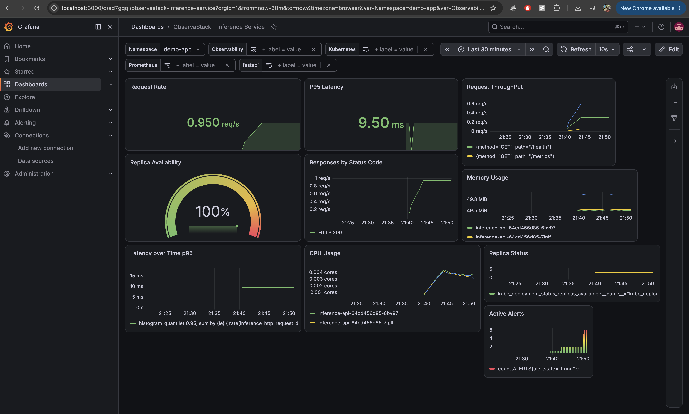
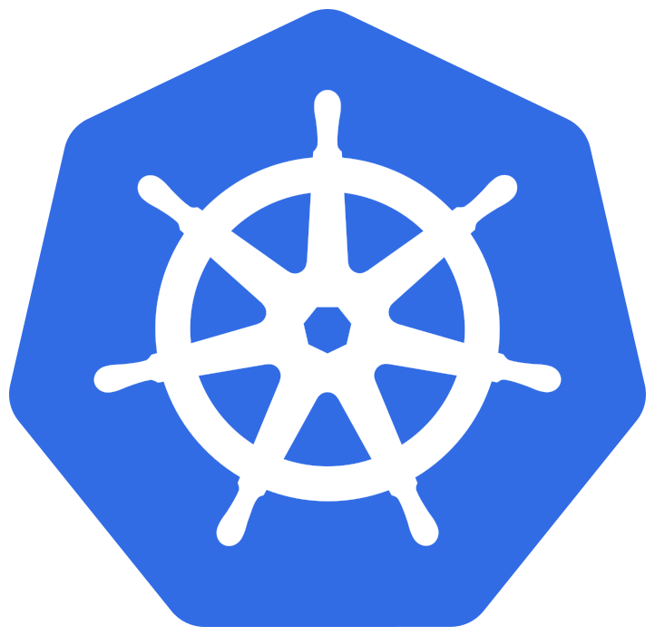
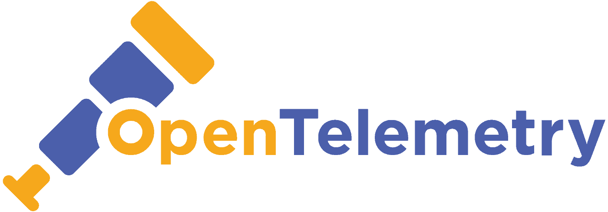
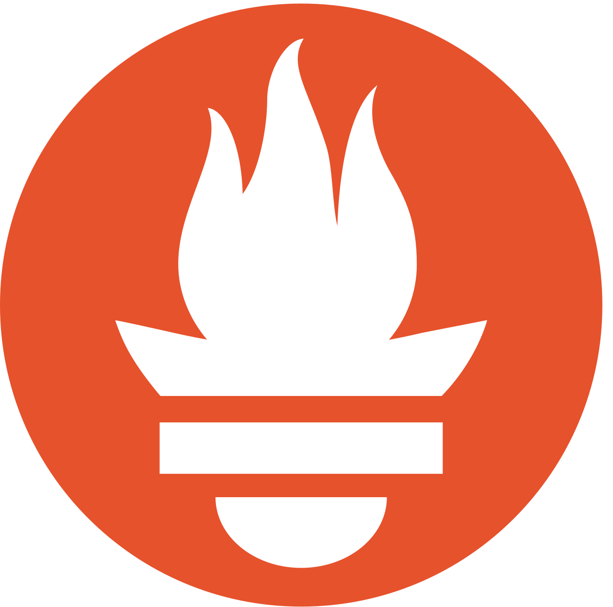
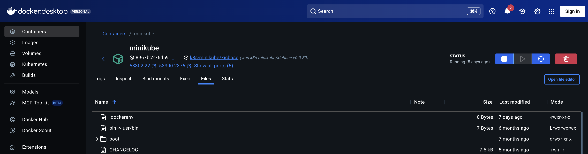
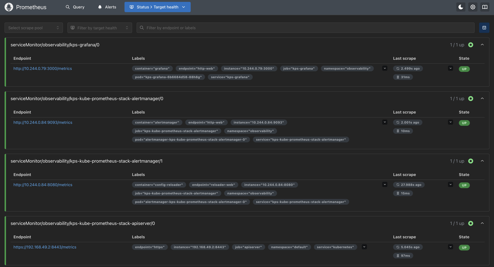

ObservaStack
An observability platform for Kubernetes-hosted inference services, designed to collect operational telemetry today and support intelligent incident analysis as the system evolves.

Telemetry from a containerized inference service, running through a local Kubernetes observability stack.
 Python
Python FastAPI
FastAPI Docker
Docker
Kubernetes
OpenTelemetry
Prometheus01
Project objective
ObservaStack is being built to explore how a modern inference service can be made observable from the beginning rather than instrumented after operational problems appear.
The implemented foundation exposes service and Kubernetes metrics through OpenTelemetry and Prometheus, then presents the resulting signals in Grafana. Future stages will use correlated telemetry to produce structured incident context for automated analysis.
02
Current architecture
The architecture keeps service logic, instrumentation, collection, visualization, and future analysis responsibilities separate.
Python
Inference application
FastAPI
REST API
03
Implemented progress
The portfolio distinguishes working components from active and future work.
Containerized API
CompleteA Python and FastAPI service runs in Docker with operational endpoints and a repeatable local environment.
Kubernetes deployment
CompleteThe service is deployed locally through Minikube, providing a realistic environment for replica and resource monitoring.
Metrics pipeline
CompleteOpenTelemetry instrumentation exposes application signals that Prometheus can collect and query.
Grafana dashboard
CompleteDashboards visualize request rate, throughput, P95 latency, response codes, resource usage, replica state, and active alerts.
Incident correlation
In designRelated detections will be grouped into a single incident so downstream analysis receives one coherent operational event.
AI analysis layer
RoadmapA provider-independent interface is planned for incident summaries, evidence review, and root-cause hypotheses.
04
Development evidence
Screenshots show the running local infrastructure and the signals currently available.


05
Engineering decisions
The project is organized around maintainability and evidence-driven incident analysis.
Make behavior measurable early
Instrumentation was added during the foundation stage so architectural changes can be evaluated with real service signals.
Analyze causes, not duplicate alerts
Events sharing the same source and operational context are intended to be consolidated before an AI provider is called.
Keep analysis vendors replaceable
The planned AI boundary isolates provider-specific code so models can change without forcing changes across the telemetry pipeline.
06
Roadmap
The roadmap records intended direction without presenting planned features as completed work.
Foundation
- Containerized FastAPI service
- Minikube deployment
- OpenTelemetry metrics
- Prometheus collection
- Grafana dashboards
Next
- Structured logs and distributed traces
- Alert normalization
- Incident grouping and deduplication
- Persistent incident storage
- Provider-neutral AI interface
Future
- AI-generated incident summaries
- Root-cause hypotheses with evidence
- Security-focused detections
- Production Kubernetes deployment
- Multi-service and multi-cluster support